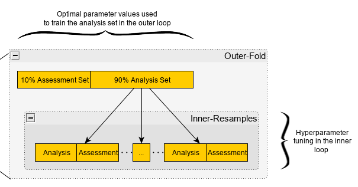
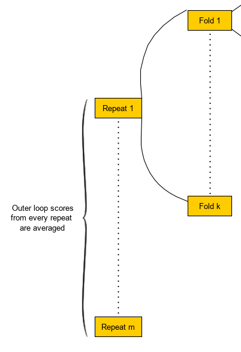
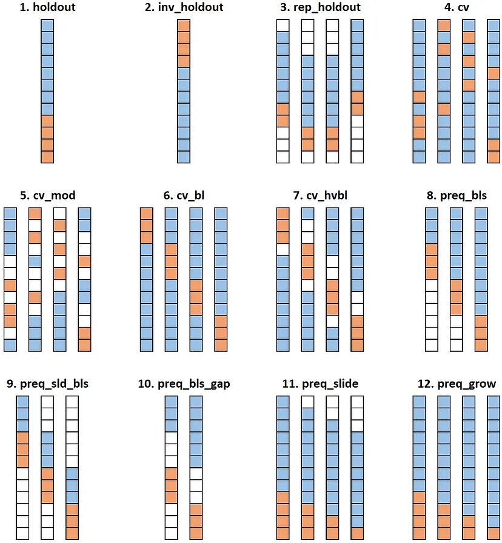
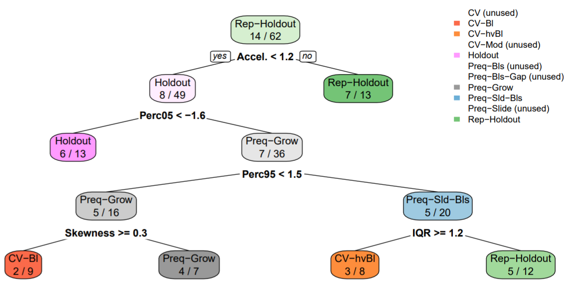
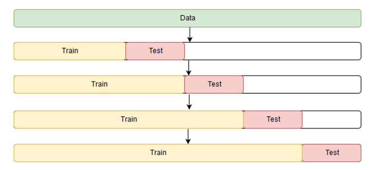
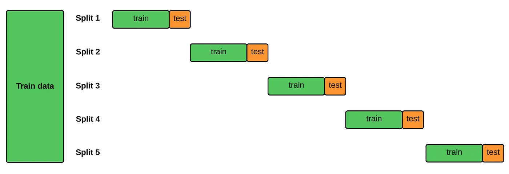

Cross-Validation
Misc
- Guide for suitable baseline models: link
- If N > 20,000 & > 60 predictors, use k-fold (Harrell)
- If N > 20,000 & < 60 predictors, use k-fold or bootstrap resampling (Harrell)
- If N < 20,000, use bootstrap resampling (Harrell)
- If N < 10,000, use nested-cv (Raschka)
- If using NCV for algorithm selection and hyperparameter tuning, the prediction error calculation is the standard CV predicition error (used for the algorithm selection) is biased in certain situations. See K-Fold >> Bates, Hastie, Tibshirani 2021 >> CV inflation
- Me: The NCV calculation of the prediction error involves the folds of inner loop that are used in the hyperparameter tuning. It might not be mathematically kosher to still calculate the prediction error using NCV method while tuning but it might still produce a less biased result and better coverage than the CV method. It’s still the same algorithm just with minor tweaks.
- Splits
- If < 12 samples per predictor
- The test partition should be no less than 10% of the sample
- If you have enough samples for reasonable predictive accuracy as determined by the sample complexity generalization error,
- A 50% test partition size is fine.
- Between these two boundaries, adjust the test size to limit the generalization test error in a tradeoff with training sample size (Abu-Mostafa, Magdon-Ismail, & Lin, 2012, pg. 57).
- If < 12 samples per predictor
- Vehtari (Paper)
- Re Modeling Assumptions:
- If you can’t make any, then using CV (and WAIC) is appropriate even with the higher variance
- If you can make assumptions, then you can reduce variance by examining directly the posterior or using reference models to filter out noise in the data (?) (see, e.g., Piironen, Paasiniemi and Vehtari (2018) and Pavone et al. (2020)).
- Re Number of Candidate Models
- For a small number of models, performance bias at the model selection stage is usually negligible, that is, smaller than the standard deviation of the estimate or smaller than what is practically relevant.
- For a large number of models, the performance bias at the model selection stage can be non-negligible, but this bias can be estimated using nested-CV or bootstrap
- The paper reviews the concepts of selection-induced bias and overfitting, proposes a fast to compute estimate for the bias, and demonstrates how this can be used to avoid selection induced overfitting even when selecting among 10^30 models
- Re Modeling Assumptions:
K-Fold
- Misc
- Any preparation of the data prior to fitting the model occur on the CV-assigned training dataset within the loop rather than on the broader data set. This also applies to any tuning of hyperparameters. A failure to perform these operations within the loop may result in data leakage and an optimistic estimate of the model skill.
- If the effective number of parameters of the model is much less than n, then with K>10, the CV bias is usually negligible compared to the CV variance. (Vehtari)
- Procedure
- Split the data into Train and Test sets
- With the Train set
- Shuffle the dataset randomly.
- Split the dataset into k groups (aka folds)
- Train Models
- Choose a fold as a validation dataset that hasn’t previously been chosen
- Use the remaining folds as a training dataset
- Fit a model on the training set and calculate the performance metric score on the validation dataset
- Retain the performance metric score and discard the model
- Repeat until each fold has been the validation dataset
- Summarize the skill of the model using the set of performance metric scores
e.g. take the mean of the performance metric scores on the validation folds
Prediction error
\[ \widehat {\text{Err}}_{cv} := \bar e = \frac{1}{n} \sum_{i=1}^n e_i \]
Standard Error of Prediction Error
\[ \widehat{\text{SE}} := \frac{1}{\sqrt{n}} \sqrt{\frac{1}{n-1}\sum_{i=1}^n (e_i - \bar e)^2} \]
CI for prediction error
\[ \bar e \pm z_{1-\alpha/2} \cdot \hat{\text{SE}} \]
- Repeat for each model
- Compare models by their mean performance metric scores
- Choose best model and use it to predict on the Test set to get the out-of-sample error
- Bates, Hastie, Tibshirani 2021
- The estimand of CV is not the accuracy of the model fit on the data at hand, but is instead the average accuracy over many hypothetical data sets
- The CV estimate of error has larger mean squared error (MSE) when estimating the prediction error of the final model than when estimating the average prediction error of models across many unseen data sets for the special case of linear regression
- CV inflation (the ratio of the true standard error of the point estimate compared to the CV estimate of standard error)
- The number of folds has minimal impact on the inflation, although more folds gives moderately better coverage for small n.
- We also find that even when n/p is less than/equal 20, there is appreciable inflation, and cross-validation leads to intervals with poor coverage
- CI for the prediction error
- Using the variance to compute the width of the error interval does not account for the correlation between the error estimates in different folds, which arises because each data point is used for both training and testing
- Estimate of variance is too small and the intervals are too narrow
- CV has poor coverage until n > 400.
- The width of the NCV intervals relative to their CV counterparts—the usual ratio is not that large for samples sizes of n = 100 or greater.
- It’s expected the standard CV intervals to perform better when n/p is larger and when more regularization is used
- Using the variance to compute the width of the error interval does not account for the correlation between the error estimates in different folds, which arises because each data point is used for both training and testing
- Recommends Nested Cross-Validation to calculate the prediction error of the algorithm and the CI for that prediction error. (see details below)
- Regarding hyperparameter tuning and model selection
- “[35] suggests a bias correction for the model selected by cross-validation, [36] shows how to return a confidence set for the best model parameters, and [33, 18] show that selecting the best value of the tuning parameter is a statistically easier goal for CV than estimating the prediction error, in some sense.”
- See the paper’s references for details on the papers being referred to.
- “[35] suggests a bias correction for the model selected by cross-validation, [36] shows how to return a confidence set for the best model parameters, and [33, 18] show that selecting the best value of the tuning parameter is a statistically easier goal for CV than estimating the prediction error, in some sense.”
Nested Cross-Validation (NCV)
{kind=link}
AKA Double Cross-Validation
Packages
- {glmnetr} - Performs nested cv using models from ‘glmnet’, ‘survival’, ‘xgboost’, ‘rpart’ and ‘torch’. Fits relaxed Lasso and other models.
- Has many similarities to {glmnet}. Recommended that you read glmnet vignettes: “An Introduction to glmnet” and “The Relaxed Lasso”
- {nestedcv} - Implements nested k*l-fold cross-validation for lasso and elastic-net regularised linear models via the {glmnet} package and other machine learning models via {caret}. Cross-validation of ‘glmnet’ alpha mixing parameter and embedded fast filter functions for feature selection are provided.
- {glmnetr} - Performs nested cv using models from ‘glmnet’, ‘survival’, ‘xgboost’, ‘rpart’ and ‘torch’. Fits relaxed Lasso and other models.
When you have a smallish dataset such that having sufficient sized (hold-out) test set is unfeasible, using normal k-fold cv for BOTH tuning and error estimation (algorithm comparison) produces biased error estimation.
- The data used for training in some folds are used for testing in other folds which increases the bias of the average error that is calculated across the folds. This bias means the average error rate across the folds can’t be used as an estimate of the error rate of the model on an independent test set.
- Repeats should lower this bias and increase robustness in a nested cv framework so that both tuning and selection can be performed simultaneously. Number of repeats depends on how stable the results are.
- Standard deviations should be recorded along with mean scores on the outer loop. If the standard deviations widely vary, then more repeats may be required.
- If repeats aren’t included, then the nested cv should only be used for algorithm comparison and a separate k-fold cv should be performed afterwards to find the optimal hyperparameters.
- The data used for training in some folds are used for testing in other folds which increases the bias of the average error that is calculated across the folds. This bias means the average error rate across the folds can’t be used as an estimate of the error rate of the model on an independent test set.
Use a larger k, number of outer folds, for smaller sample sizes
- In Kuhn’s example, he used 5 repeats of 10-fold cv with each fold comprised of 25 bootstrap resamples for just a 100 row dataset and the error estimate was pretty much balls on.
Kuhn used resamples for the inner-loop, but Raschka used folds. So either should be fine.
Steps for algorithm selection:
- Entire nested cv procedure is executed for each candidate algorithm
- If the algorithms make repeats too computationally intensive, then don’t do the repeats. After the algorithm is selected, perform a k-fold cv for hyperparameter tuning.
- For each algorithm (using repeats):
- A complete grid search of all hyperparameters is computed in each inner-resample of each fold of each repeat
- If we have 5 repeats of 10-fold cv with each fold comprised of 25 bootstrap resamples, then there will be 5 * 10 * 25 = 1250 grid search sessions completed
- In a fold of a repeat, the mean score (e.g. RMSE) and standard deviation are calculated for each hyperparameter value combination across all the resamples’ assessment sets.
- The hyperparameter value combination with the best mean score (e.g. lowest average RMSE) is selected
- Repeat for each fold in each repeat
- In a fold of a repeat, the selected hyperparameter values are used to fit on the entire analysis set of the fold.
- The fitted model is scored on the assessment set of the fold
- Repeat for each fold in each repeat
- Calculate the average score and standard deviation across all folds for every repeat (i.e. one score value)(e.g. average RMSE)
With 5 repeats of 10-fold cv:
\[ \overline {\text{RMSE}} = \frac{1}{50} \sum_{\text{fold}=1}^{50} \text{RMSE}_{\text{fold}} \]

- This score is what will be compared during algorithm selection
- The standard deviations can be used to get a sense of the stability of the scores
- A complete grid search of all hyperparameters is computed in each inner-resample of each fold of each repeat
- Repeat for each algorithm
- Choose the algorithm with the lowest average score
- For the final model, use the hyperparameter combination chosen most frequently as best during the inner-loop tuning of the winning algorithm.
Bates, Hastie, Tibshirani 2021
- .632 Bootstrap intervals are typically, but not always, wider than the NCV intervals. The bootstrap point estimates are typically more biased that the NCV point estimates.
- Found that a large number (e.g., 200) of random splits (aka Repeats) of nested CV were needed to obtain stable estimates of the standard error
- “We anticipate that nested CV can be extended to give valid confidence intervals for the difference in prediction error between two models.”
- No details given on this procedure. Not sure it’s as straightforward as differencing each CI endpoint or what.
- Procedure for the prediction error estimate and its CI
- Per Fold
- \(e_{\text{in}}\) - vector of errors (i.e loss function values) from the calculations of the errors on all validation sets in the inner loop
- i.e. Each validation set has a vector of errors, so \(e_{\text{in}}\) is essentially of vector of vectors that’s been coerced into 1 vector
- \(e_{\text{out}}\) - Vector of errors from the validation set of the outer loop using a model trained on the entire training set of the fold
- \(a_{\text{fold}_i} = (\bar{e}_{\text{in}} − \bar{e}_{\text{out}})^2\)
- \(b_{\text{fold}_i} = \text{Var}(e_{\text{out}})\)
- \(\text{append}(a_{\text{list}}, a_{\text{fold}_i})\)
- \(\text{append}(b_{\text{list}}, b_{\text{fold}_i})\)
- \(\text{append}(\text{es}, e_{\text{in}})\)
- \(e_{\text{in}}\) - vector of errors (i.e loss function values) from the calculations of the errors on all validation sets in the inner loop
- \(\widehat{\text{MSE}} = \bar a_{\text{list}} − \bar b_{\text{list}}\)
- Standard error of the prediction error estimate
- \(\widehat{Err}_{\text{NCV}} = \overline{\text{es}}\)
- Prediction error estimate
- Compute Bias correction value
Fit a standard k-fold CV and compute \(\widehat{Err}_{\text{NCV}}\)
Guessing K (# of folds) for NCV and CV are equal
\(\widehat{\text{Err}}_{\text{cv}}\) would be the average error on the validation folds
\[ \widehat {\text{Err}}_{cv} := \bar e = \frac{1}{n} \sum_{i=1}^n e_i \]
Bias
\[ \widehat {\text{bias}} := \left(1 + \frac{K-2}{K}\right)\left(\widehat{Err}_{\text{NCV}} - \widehat{Err}_{\text{CV}}\right) \]
- CI for the prediction error estimate
Regression
\[ \widehat{\text{Err}}_{\text{NCV}} - \widehat{\text{bias}} \pm q_{1-\alpha /2} \cdot \sqrt{\frac{K-1}{K}} \cdot \sqrt{\widehat{\text{MSE}}} \]
- The \(\sqrt{\frac{K-1}{K}} \cdot \sqrt{\widehat{\text{MSE}}}\) term needs to be restricted to be between \(\widehat{\text{SE}}\) and \(K \cdot \widehat{\text{SE}}\)
- K is the number of folds
For binary classification using 0/1 loss
\[ \sin^{-1}\left(\sqrt{\widehat{\text{Err}}_{\text{NCV}}}\right)\pm z_{1-\alpha/2} \cdot \frac{\sqrt{\widehat{\text{MSE}}}}{\widehat{\text{SE}}} \cdot \sqrt{\frac{1}{4n}} \]
n is the sample size
Where \(\widehat{\text{SE}}\) is the estimate of the width of the confidence interval using standard k-fold CV
\[ \widehat{\text{SE}} := \frac{1}{\sqrt{n}} \sqrt{\frac{1}{n-1}\sum_{i=1}^n (e_i - \bar e)^2} \]
Not sure if this would be viable for some other loss function like cross-entropy loss or not. See Appendix E for a few more details.
- Per Fold
- Notes
- No initial split where there’s a hold out set that doesn’t go through the ncv procedure
- Paper acknowledges that hyperparameter tuning might be useful for ncv, but says they’re not getting into it in this paper.
{kind=link}
{kind=link}
Sliding Window Cross-Validation
{kind=link}
- Instead of each fold using a different block of observations for the validation/test set, each successive fold slides the interval of the target variable interval (e.g. 3 weeks) from the previous fold
- Split the data before creating the folds to avoid leakage.
- Example: Classification
- See Algorithms, Marketing >> Propensity Model
- From Scoring Customer Propensity using Machine Learning Models on Google Analytics Data
- Each row is a customer
- Each fold
- Feature values are values that have been aggregated over a 3 month window for each customer
- Target variable is purchase/no purchase which is detected over the next 3 weeks
- Example: Multi-step time series forecasting with XGBoost
- Codes a sliding-window (don’t think it’s a cv approach though) and forecasts each window with the model using the Direct method
- Not exactly sure how this works. No helpful figs in the article or the paper if follows, so would need to examine the code
Time Series
Misc
- Usually, the forecast horizon (prediction length), H, equals the number of time periods in the testing data
- At a minimum, the training dataset should contain at least three times as many time periods as the testing dataset
- In time series model comparison, CV variance is likely to dominate, and it is more important to reduce the variance than bias. Leave-Few-Observations with joint log score is better than use of Leave-Future-Out (LFO). Cooper et al. (2023) (Vehtari)
Paper: Evaluating time series forecasting models: An empirical study on performance estimation methods
Code in R
Algorithm used: rule-base regression system Cubist (trees)
- “Other learning algorithms were tested, namely the lasso and a random forest. The conclusions drawn using these algorithms are similar to the ones reported in the next sections.”
- Data
- Each of the 62 time series had lengths of either 949, 1338, or 3000.
- Half-Hourly, Hourly, and Daily Frequencies
- Industries: bike sharing, stock prices from aerospace companies, air quality, solar radiation, and water consumption
Types
(Blue) Training set (including validation fold); (Orange) Test set; (White) Unused
CV Methods
- CV (Standard): randomized K-fold cross-validation (4)
- CV-Bl: Blocked K-fold cross-validation (6)
- CV-Mod: Modified K-fold cross-validation (5)
- CV-hvBl: hv-Blocked K-fold cross-validation. Tries to increase the independence between training and validation by introducing a gap between the two samples (7)
Out-of-Sample Methods
- Holdout (vice versa Inverse Holdout): A simple OOS approach–the first 70% is used for training and the subsequent 30% is used for testing (1, 2)
- Rep-Holdout: OOS tested in nreps testing periods with a Monte Carlo simulation using 70% of the total observations t of the time series in each test. For each period, a random point is picked from the time series. The previous window comprising 60% of t is used for training and the following window of 10% of t is used for testing. (3)
- Preq-Bls: Prequential evaluation in blocks in a growing fashion (8)
- Preq-Sld-Bls: Prequential evaluation in blocks in a sliding fashion–the oldest block of data is discarded after each iteration (9)
- Preq-Bls-Gap: Prequential evaluation in blocks in a growing fashion with a gap block– this is similar to the method above, but comprises a block separating the training and testing blocks in order to increase the independence between the two parts of the data (10)
- Preq-Grow and Preq-Slide: An observation is first used to test the predictive model and then to train it. Method can incoroporate either a growing/landmark window (Preq-Grow) or a sliding window (Preq-Slide). (11, 12)
Best Performing (i.e. cv error closest hold-out error) (i.e better estimation of generalized performance)
- Rep-Holdout - Repeated holdout. It’s similar to holdout, but it consists of n estimates. Moreover, differently from holdout, not all the observations are used in a single estimate. A block (e.g. 70%) of the dataset is randomly selected, the first part of that block is used for training and the subsequent part for testing. This procedure is repeated n (e.g. 5) times
Varied length of dataset from a size of 100 to a size of 3000, by intervals of 100 (100, 200, …, 3000). The experiments did not provide any evidence that the size of the synthetic time series had a noticeable effect on the error of estimation methods.
In a stationary setting the cross-validation variants are shown to have a competitive estimation ability. However, when non-stationarities are present, they systematically provide worse estimations than the out-of-sample approaches.
Best method based on summary stats of time series
- Summary Stats used in the Decision Tree (Tree only used 4 of the stats as splits)
- Skewness: For measuring the symmetry of the distribution of the time series;
- 5th and 95th Percentiles (Perc05, Perc95) of the standardized time series;
- Acceleration (Accel.): As the average ratio between a simple moving average and the exponential moving average;
- Inter-Quartile Range (IQR): as a measure of the spread of the standardized time series;
- Serial Correlation - Estimated using a Box-Pierce test statistic;
- Long-Range Dependence: A Hurst exponent estimation with wavelet transform;
- Maximum Lyapunov Exponent: A measure of the level of chaos in the time series;
- Stationary: A boolean variable, indicating whether or not the respective time series is stationary according to the wavelet spectrum test
- Interpretation: Rep-Holdout, which is the best method most of the time across the 62 time series, should be used unless the acceleration is below 1.2. Otherwise, the tree continues with more tests in order to find the most suitable estimation method for each particular scenario.
- Summary Stats used in the Decision Tree (Tree only used 4 of the stats as splits)
Article: 12 Ways to Test Your Forecasts like A Pro
- Code in Python
- Algorithm used: Linear Regression with lags and day-of-the-week variable.
- Data: Hyndman datasets - “TSDL consists of 648 datasets, but I selected only the univariate time-series with at least 1,000 observations.” (Turns out to be around 58 datasets I think)
- Experiment: 90% used to perform cv method (cv error); model trained on 90% and tested on the 10% hold-out (hold-out error)
- Best Performing (i.e. cv error closest hold-out error) (i.e better estimation of generalized performance)
- Inverse holdout: (13 wins) It’s the opposite of holdout: the latest part of the data (usually 75% or 80%) is used for training and the preceding part is used for testing.
- preq_grow: (7 wins) Prequential growing window. n iterations are carried out. At the first iteration, the test set is made of the latest part of observations (e.g. the latest 20%), whereas the first part is used for training. In the following iterations, the test set dimension is progressively reduced, and all the remaining observations are used for training.
- preq_sld_bls: (7 wins) Prequential sliding blocks. Each fold is made only of adjacent points. For each model, one fold is used for training and the subsequent fold is used for testing.
Expanding Window or Forward Chaining or Online Training
- Simulates production environment
- preq-grow method above
- {{sklearn.model_selection::TimeSeriesSplit}}
- See How-To: Cross Validation with Time Series Data for coded example
Blocked Split
- Overlapping folds might lead to overly optimistic scores given models are being trained on some of the same data in successive folds.
- Proposed as solution to the potential scoring bias of the expanding window method
- Same as preq-sld-bls above except that the train/test folds don’t overlap
- If the test set overlaps with next training fold, it shouldn’t have the issue that this method is remedying.
- i.e. preq-sld-bls code should be fine, if you’re worried about CV score inflation.
- If the test set overlaps with next training fold, it shouldn’t have the issue that this method is remedying.
- See Reduce Bias in Time Series Cross Validation with Blocked Split for a coded example
- Overlapping folds might lead to overly optimistic scores given models are being trained on some of the same data in successive folds.
{kind=link}
{kind=link}
{kind=link}